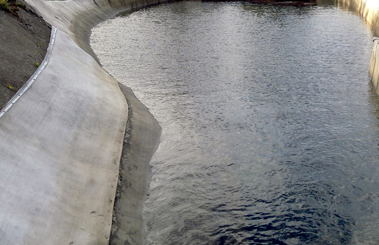
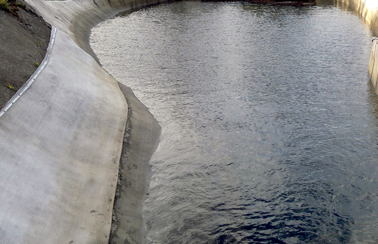
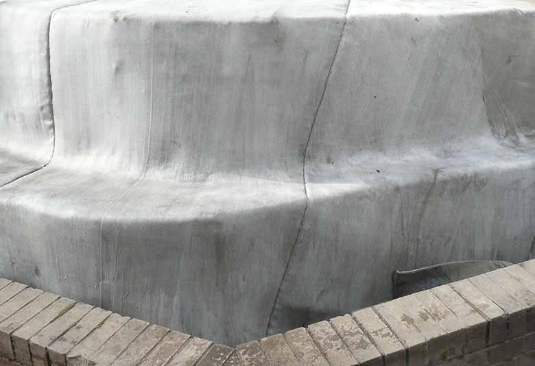
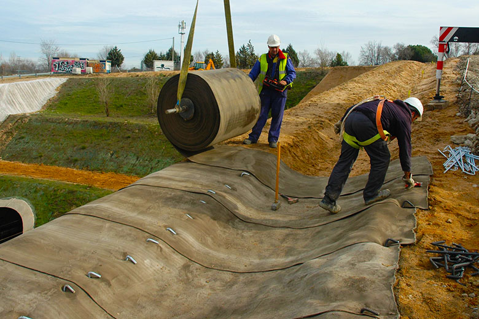
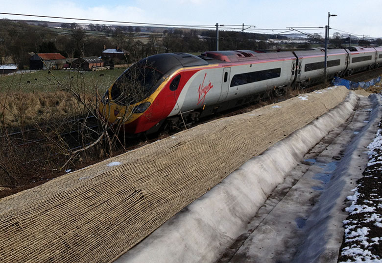
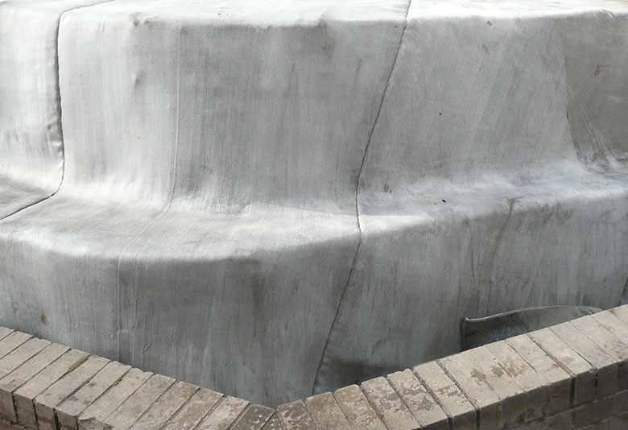
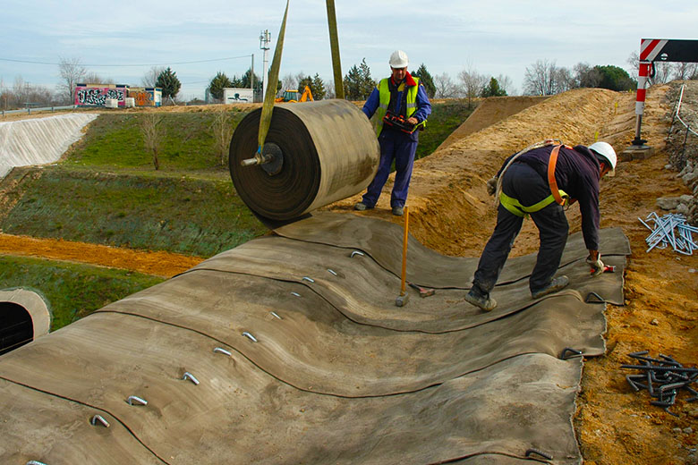
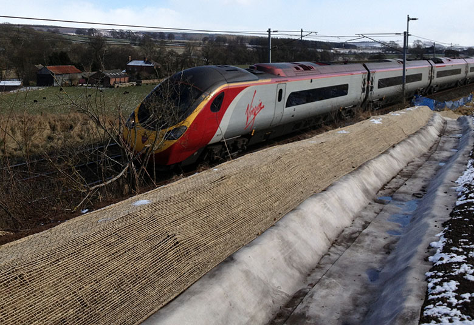

Москва. Центральный офис
Представительство в UK
 



 






Инновационная разработка
из Великобритании
Бетонное полотно Concrete Canvas — это гибкая, пропитанная
сухой бетонной смесью ткань с ПВХ-подкладкой. Она легко раскатывается по любой горизонтальной или наклонной, ровной или неровной поверхности, а затем смачивается водой. Также полотно можно растянуть на металлическом каркасе.
Через 1—2 часа бетонная «начинка» затвердевает, а ткань принимает форму поверхности. Спустя 24 часа полотно достигает 80% прочности. В результате образуется прочный, водонепроницаемый и огнеупорный бетонный слой.
В 2011 году вошло в ТОП-5 лучших изобретений человечества, делающих мир чище и комфортнее.
чтобы рассмотреть
подробнее
Скорость работ увеличивается в 10 раз,
а расход материалов сокращается на 90%
Высокая
скорость укладки
Сравните: бригада из 6 неквалифицированных рабочих способна укладывать ткань Concrete Canvas со скорость 800 м² в день, а при работе с раствором столько же квалифицированных рабочих способны уложить в день лишь 80 м² покрытия. Разница в 10 раз! Рабочим не приходится тратить время на смешивание, дозировку и уплотнение бетона.
Бригада из 6
рабочих
800
m2 в день
Скорость работ увеличивается
в 10 раз
Монтаж в любых погодных условиях
Время затвердевания бетонной ткани 1—2 часа. Во время дождя этого времени вполне достаточно, чтобы развернуть и закрепить рулон. К тому же не придется тратить время на его смачивание. Ткань прочно удержит раствор от вымывания, а слой ПВХ отведет лишнюю влагу. Когда дождь закончится, ткань очень быстро высохнет. Низкие температуры также не помеха для монтажа
1-2
часа на
затвердевние
80%
прочности
через 24 часа
Расход материалов сокращается
на 90%
-
Специальная техника
и оборудование не потребуютсяВ частности, полностью отпадает необходимость в бетоносмесителях. Кроме того, не потребуется нанимать специально подготовленных работников. Незатвердевшая бетонная ткань режется и скрепляется с помощью обычного ручного инструмента и крепежа - Независимость
от поставщиков бетонаВ некоторых случаях поставки бетона могут быть затруднены. Особенно это относится к удаленным регионам. Кроме того, не всегда и не все бетонные заводы способны обеспечить должное качество смеси. В то время как бетонная ткань — это гарантированно неизменное и высокое качество состава - Минимальный менеджмент
Во многих случаях работа с Concrete Canvas не требует серьезного менеджмента. Если рабочие уже имеют опыт укладки этого материала, то им достаточно дать общие указания. А поскольку нет привязки к поставщикам бетона и строительной технике, то отпадает необходимость в многочисленных согласованиях и тщательном планировании
Самое широкое применение —
от укрепления склонов
и строительства до мебельного дизайна
Благодаря своим ключевым характеристикам, высокой скорости и предельной простоте монтажа, рулонный
бетон Concrete Canvas находит применение во многих
сферах.
Он может использоваться как самостоятельно, так и вместе с другими технологиями и материалами — например, с габионами, геоматами, стальными и железобетонными конструкциями.


Эффективное решение
для труднодоступных мест
Бетонный холст Concrete Canvas — эффективное решение для удаленных регионов России. Как уже отмечалось, с ним можно работать практически в любых климатических условиях — от морозного севера и влажного северо-запада до засушливого юга.
Concrete Canvas позволяет производить работы даже в самых труднодоступных местах. Единственное, что требуется, — это доставить рулоны и обеспечить подачу воды.
Concrete Canvas позволяет производить работы даже в самых труднодоступных местах. Единственное, что требуется, — это доставить рулоны и обеспечить подачу воды.
Международные эксперты оценивают
бетонное полотно Concrete Canvas на «отлично +»
Concrete Canvas успешно используется во многих отраслях за рубежом. На его счету множество положительных оценок экспертов. Сегодня возможность оценить все преимущества этого инновационного решения появилась и у российских компаний.
The two founders developed an innovation in construction technology while studying at Imperial College London and the Royal College of Art. Their concrete material can be transported in a roll, then unfurled on-site before it hardens when water is added. The method can mean that building work takes as little as a tenth of the time and whole buildings can be carried in a bag.
Working on a project to build inflatable concrete buildings, they had been tasked with creating a new use for cement.
While experimenting with Modroc — a plaster-impregnated bandage used to help mend broken bones — they came up with the concept of making inflatable shelters that could be constructed very quickly for use in emergencies.
After leaving the RCA, the pair continued to work on the idea of shelters that could be dropped into disaster zones or areas of mili-
CC is produced in roll format and is exported to over 40 countries worldwide for use in a variety of applications, from ditch lining to slope protection. It is ideal for challenging and remote environments, such as those in the mining sector. It also has significantly reduced shipment costs and logistics, with installation being around 10 times faster than conventional concrete.

Победитель Премии Инноваций
на выставке «Рэйлтекс» (Railtex)
2013 года

Победитель Премии 100
Научно-исследовательских
и конструкторских работ
2012 года
Победитель Премии 2009 года
в области разработок сред
для соединений материалов
«Мэтириэл Конэкшн Мидием»

2013 год. Финалист премии МакРоберта
2011 год. Самый инновационный продукт года, по мнению экспертов

2011 год. Номинант премии Brit Insurance Designs
Заинтересованы?
Предлагаем сотрудничество!
Компания United Сoncrete Canvas Russia является официальным партнером производителя бетонного полотна, британской компании Concrete Canvas Ltd. Мы занимаемся поставками полотна на
территории России и СНГ, а также консультациями по его применению и монтажу.
Если вас заинтересовал этот продукт, то мы готовы ответить на все ваши вопросы, предоставить дополнительную информацию и обсудить варианты сотрудничества.